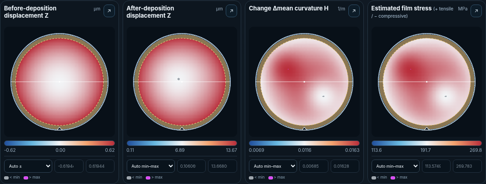
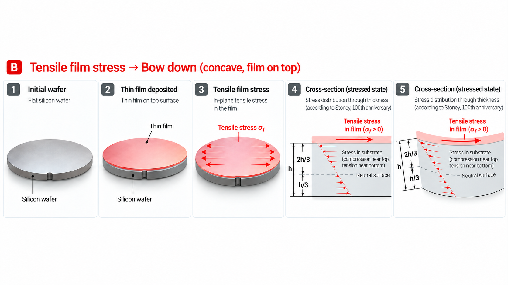
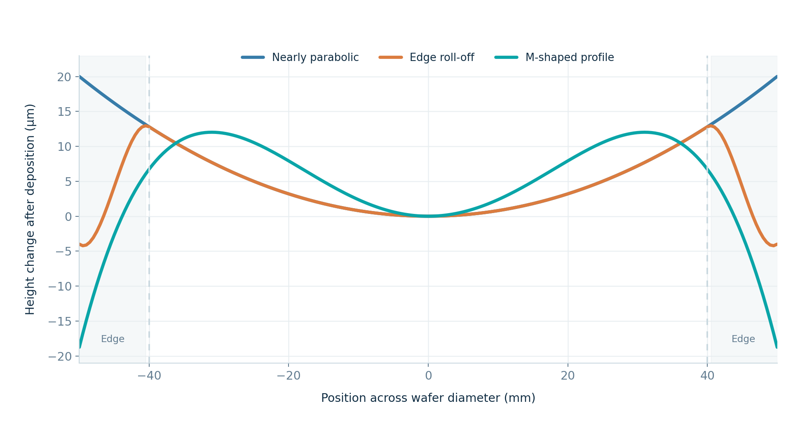
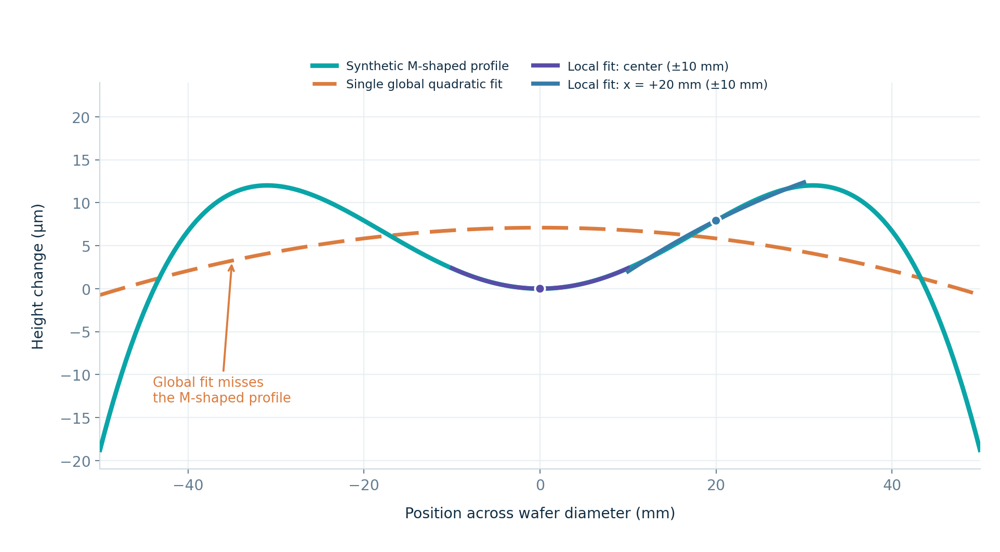
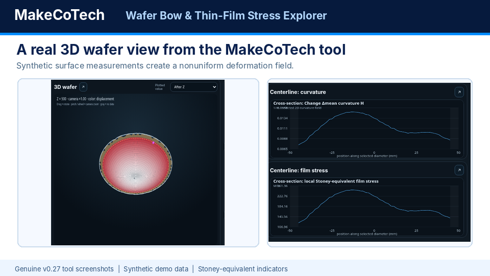
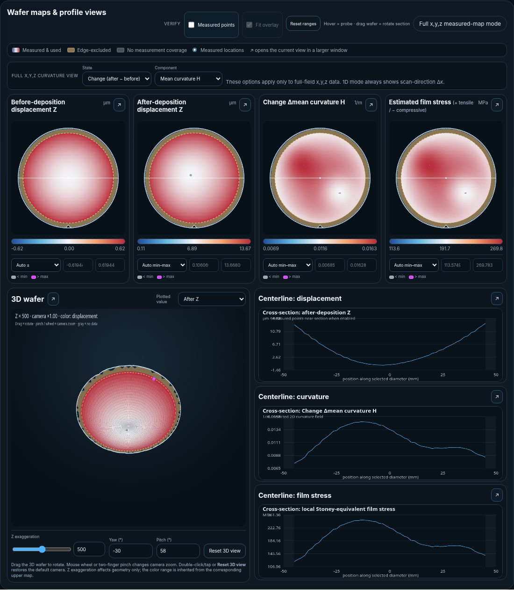
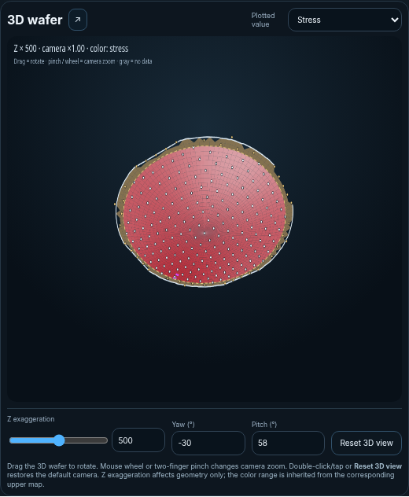

A metrology instrument may report one value for film stress. Yet that number is an interpretation of a measured wafer shape—not a direct measurement of stress everywhere on the wafer. How do we know whether a single curvature value adequately represents the actual profile?
Video overview · 1 minute · Chips & MEMS
Why thin-film stress matters — and what wafer bow can tell us
See how deposited films can affect the durability of semiconductor chips and MEMS devices, why backside deposition matters, and how measured curvature changes help estimate average film stress.
From data to wafer maps. This is a genuine screenshot from our current offline explorer (v0.27) using synthetic full-field measurements. The interface shows before/after height, curvature change and spatially varying Stoney-equivalent indicators.

Explore the actual local-curvature calculations in v0.27 →
From Stoney’s coated steel strips to silicon wafers
Stoney’s 1909 work established the connection between a coating’s stress and the bending of a supporting substrate. A century later, Janssen, Abdalla, van Keulen, Pujada and van Venrooy (2009) revisited this relationship and emphasized its correct application to single-crystal silicon, the dominant substrate in modern semiconductor metrology.
Their paper, “Celebrating the 100th anniversary of the Stoney equation for film stress: Developments from polycrystalline steel strips to single crystal silicon wafers,” makes an important distinction: although the isotropic formula works for materials such as glass or polycrystalline steel, silicon requires an orientation-dependent biaxial modulus.
What Stoney’s equation actually calculates
Under the thin-film, small-elastic-deformation and approximately uniform equibiaxial stress assumptions, the stress–curvature relationship can be expressed as:
Here σf is the inferred average film stress, Ms is the substrate’s biaxial modulus, hs is substrate thickness, tf is film thickness and Δκ is the change in curvature between measurements before and after film deposition. Stress sign depends on a consistent curvature sign convention.
For an elastically isotropic substrate, the biaxial modulus is:
Comparing the before and after wafer shapes is important. Otherwise, pre-existing substrate curvature can be mistakenly attributed to the deposited film.
Where does thin-film stress come from?
Deposited films can contain residual in-plane stresses even when no external load acts on the wafer. Two major contributions are intrinsic (growth-related) stress and thermal-mismatch stress. Their combined effect can cause bow during processing or after the wafer returns to measurement temperature. [4]
Intrinsic stress — formed during deposition
The film’s growth process can develop stress through coalescence of islands and grains, atomic peening, densification, grain-boundary effects, defects and incorporated impurities or interstitial atoms. The mechanisms and stress sign depend on material and process conditions, including temperature and deposition method.
Thermal stress — generated by expansion mismatch
After deposition at elevated temperature, the film and substrate generally contract by different amounts on cooling. Because the film is constrained by the bonded substrate, this mismatch produces additional mechanical stress. Annealing, thermal cycling and stress relaxation may alter the final state.
For a simplified, isotropic, elastic, equibiaxial film that remains bonded to the substrate, a first thermal estimate is σthermal ≈ Mfilm(αsubstrate − αfilm)ΔT, with ΔT defined as measurement temperature minus the initially stress-free reference temperature. Process-induced intrinsic stress and temperature-dependent material properties must be treated separately when needed.
How the net stress sets the direction of wafer bow
For a single thin film on an initially flat, otherwise uniform wafer, the sign of the resulting net in-plane film stress determines the sign of the curvature change, once the wafer surface orientation and the sign convention are defined. A tensile and a compressive film on the same side tend to bend the substrate in opposite directions. A pre-bowed wafer, multilayer film stack, nonuniform deposition or spatial stress gradients can produce a more complicated profile; therefore, the before/after curvature change is generally more informative than absolute bow alone.
Original five-step schematic prepared for MakeCoTech

Why Si(001) and Si(111) are not interchangeable
Single-crystal silicon is elastically anisotropic. Janssen and coauthors provide the following orientation-specific biaxial moduli in terms of silicon’s elastic compliance constants:
| Silicon wafer orientation | Biaxial modulus | For identical curvature and thicknesses |
|---|---|---|
| Si(001) | 180.3 GPa | Reference stress |
| Si(111) | 229.1 GPa | ~27% higher inferred stress |
This 27% difference concerns the calculation for identical curvature and thickness. It does not imply that films processed on the two orientations will necessarily generate the same curvature. The paper also shows that crystallographic anisotropy does not automatically imply a strongly directional or M-shaped wafer profile.
Where the simple model is useful—and where it stops
Thin film, thick substrate
The film is much thinner than the wafer; bending occurs in the elastic substrate.
Representative curvature
The analyzed region must support a meaningful common curvature estimate.
Approximately equibiaxial stress
The simple relationship assumes a suitable in-plane stress state and negligible spatial variation.
Correct material model
Substrate orientation, thicknesses and before–after curvature all matter.
Stoney’s equation is not a general inverse solution that recovers a complete local stress field from an arbitrary three-dimensional wafer shape. Substantial spatial curvature variation, multilayers or large deformation can require more advanced analytical or numerical treatment.
Why inspecting wafer cross-sections changes the discussion
In practical metrology, wafer profiles may be nearly parabolic, distorted near the edge or nonuniform over much of the diameter. These cases should not automatically be treated with the same one-number fitting strategy.
Same diameter, distinctly different deformation patterns

Edge effects: an analysis choice, not a magic correction
Changes in film growth, wafer bevel geometry, thermal or support conditions, or optical metrology behavior can create edge-localized features. These are possible mechanisms—not proof that every wafer has an intrinsic edge roll-off.
Edge exclusion removes measurements within a specified distance of the perimeter before fitting. The chosen distance should have a physical or metrology justification. Increasing exclusion just to obtain a preferred stress value is not a defensible procedure.
One M-shaped wafer. Several very different stress indicators.
Now consider a single synthetic M-shaped profile and force one global parabola through the complete diameter. The global fit cannot reproduce the two shoulders and the central valley. Its curvature may be numerically well defined while being physically unrepresentative of the wafer shape.
The colored local fits follow different sections of the same unchanged dataset

For a hypothetical 100 mm diameter Si(001) wafer, 525 µm substrate thickness and 500 nm film thickness, the following values are obtained by applying the Stoney coefficient to the fitted curvatures:
Even edge exclusion can reverse the reported sign
Using a single global quadratic fit, but changing only the edge-exclusion distance in that same unchanged M-shaped dataset, gives:
| Edge exclusion | Global Stoney-equivalent stress | Interpretation |
|---|---|---|
| 0 mm | -104 MPa | Includes the full M-shaped perimeter |
| 5 mm | +72 MPa | Value changes sign |
| 10 mm | +230 MPa | Higher positive effective curvature |
The film and wafer have not changed at all; only the fitted analysis region changed. These results illustrate sensitivity to model choice rather than a physical stress evolution. A better fit to the center after excluding the edge does not by itself validate the constant-curvature assumption across the remaining wafer.
Under a small-slope approximation, curvature is related to the second derivative of cross-sectional height. A strongly non-parabolic height profile can therefore exhibit positive and negative local curvature, while a global least-squares parabola collapses the entire geometry to one coefficient.
What an engineer should check before reporting stress
- Inspect raw profiles: cross-sections, asymmetry, localized edge features and systematic shape changes.
- Set a defensible fitting region: document edge exclusion and any invalid-data criteria.
- Review fit quality: compare measured and fitted shapes, not just a numerical stress output.
- Test sensitivity: report how curvature changes when the region or method changes.
- Check the underlying model: determine whether a single Stoney estimate is appropriate or whether advanced mechanics are required.
From a film-stress measurement to component durability
Residual stress does not end at the wafer-metrology station. A deposited layer can influence equipment hardware during repeated processing, the reliability of a finished microelectronic device, and the mechanical behavior of a MEMS structure. The physics are connected, but the geometry, relevant failure mechanisms and appropriate analysis models differ.
Reactor-component integrity
Over repeated deposition cycles, films or process deposits can accumulate on chamber walls, wafer supports and other exposed components. Their thickness, composition, adhesion and residual stress may evolve with temperature and processing history.
Stress mismatch, thermal cycling and local geometry can contribute to coating cracking, delamination, deformation or particle generation. The outcome depends on the material system; stress does not necessarily increase monotonically with every deposition.
Long-term device reliability
Residual and thermomechanical stresses in passivation, dielectric, metallization and packaging layers can affect wafer warpage, interfaces and component stability during fabrication and service.
Depending on the design and loading history, these stresses may contribute to cracking, interfacial delamination and reliability drift, particularly during thermal processing or temperature cycling.
Mechanical performance after release
In MEMS, thin-film stress and through-thickness stress gradients can influence membrane tension, cantilever bending, resonant frequency, sensor offset and mechanical stability.
Wafer-curvature measurements can help characterize films before release, but a released beam or membrane behaves differently from an intact coated wafer. Its deformation must account for geometry, residual-stress gradients and multilayer mechanics.
A common measurement, different engineering questions. Stoney-based wafer metrology is a valuable route to an effective thin-film stress when its assumptions are satisfied. It is not a direct calculation of stress in a thick coating on a complex reactor component, a multilayer package, or a released MEMS device. Those problems generally require more detailed mechanics, additional measurements and, where appropriate, finite-element analysis.
For example, a film-stress measurement on a suitably coated witness wafer can inform a reactor-component simulation, but the simulation must still account for the component's actual materials, thickness evolution, thermal cycles, support conditions and interfaces. [3] [4] [5]
Wafer Bow & Thin-Film Stress Explorer
The MakeCoTech explorer helps engineers move from a reported film-stress number to the shape and fitting decisions behind it. Users can compare local quadratic regression and global quadratic fitting, examine measured before/after wafer profiles, inspect spatial changes in curvature and Stoney-equivalent stress, and test how edge exclusion affects an inferred result.
Local curvature extraction is already part of the offline explorer. It exposes nonuniform deformation that a single parabola may conceal, but local Stoney-equivalent stress is not automatically the true local film stress for an M-shaped or otherwise nonuniform wafer. Full mechanical stress reconstruction requires further assumptions and modeling.
To demonstrate a spatially varying result, we ran the actual MakeCoTech Wafer Bow & Thin-Film Stress Explorer v0.27 with an explicitly synthetic full-field x,y,z dataset. The tool performs local 2D quadratic surface fitting to infer geometric curvature changes across the wafer and displays a local Stoney-equivalent stress indicator. No part of the software screenshot below was generated or retouched.
Built from the five-panel explanation and real v0.27 application screenshots



The explorer is provided as a browser-based engineering interpretation tool. The spatial stress values shown are Stoney-equivalent indicators inferred from local curvature; they are not direct measurements or a full inversion of actual film stress.
Launch interactive explorer v0.27 →Final perspective
Wafer stress is not just a number. It is an inference from deformation, substrate mechanics and deliberately chosen analysis assumptions. Correctly interpreted film-stress data can become an input to broader engineering decisions—from the durability of deposition-exposed reactor hardware to the reliability of microelectronic devices and the performance of MEMS structures.
The lasting contribution of Stoney’s equation—and its extension to silicon crystals by Janssen and colleagues—is greatest when the assumptions remain visible. A good metrology workflow reports not only a result, but also why that result is meaningful and where more advanced mechanics are needed.
References
- G. G. Stoney, “The Tension of Metallic Films Deposited by Electrolysis,” Proceedings of the Royal Society A, 82 (1909), 172–175. DOI: 10.1098/rspa.1909.0021.
- G. C. A. M. Janssen, M. M. Abdalla, F. van Keulen, B. R. Pujada, B. van Venrooy, “Celebrating the 100th anniversary of the Stoney equation for film stress: Developments from polycrystalline steel strips to single crystal silicon wafers,” Thin Solid Films, 517 (2009), 1858–1867. DOI: 10.1016/j.tsf.2008.07.014.
- J. Lee, J. Jang and S. J. Hong, “Understanding the Chamber Wall-Deposited Thin Film of Plasma Deposition Equipment for the Efficiency of In Situ Dry-Cleaning,” Coatings, 15 (2025), 563. DOI: 10.3390/coatings15050563.
- M. Huff, “Review Paper: Residual Stresses in Deposited Thin-Film Material Layers for Micro- and Nano-Systems Manufacturing,” Micromachines, 13 (2022), 2084. DOI: 10.3390/mi13122084.
- KU Leuven, Department of Materials Engineering, “Reliability, Robustness and Failure Analysis of Microelectronics.” Research overview.
The Stoney model and orientation-dependent moduli are summarized from the cited literature; equipment, microelectronics and MEMS applications draw on the additional references. Figures, synthetic profiles, fitting-window comparisons and edge-exclusion examples are independent illustrative calculations, not experimental evidence or customer measurement data.